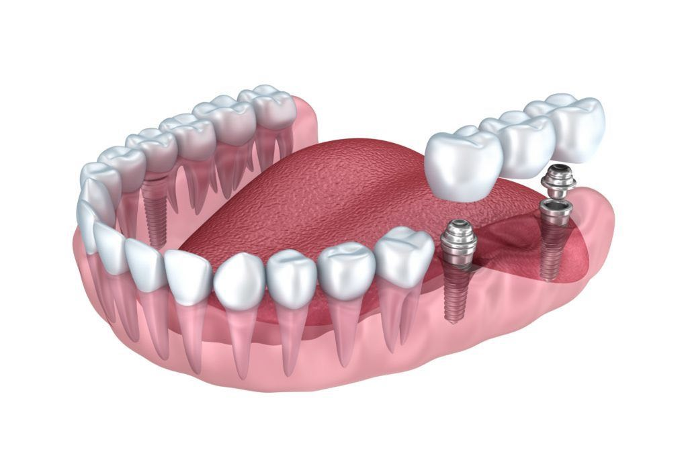
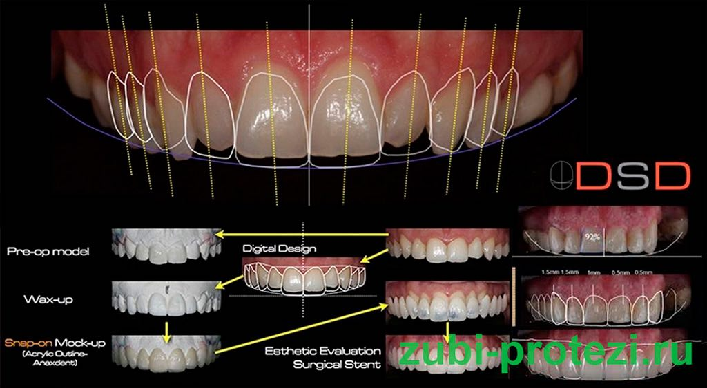
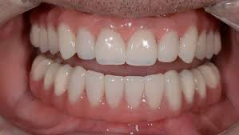
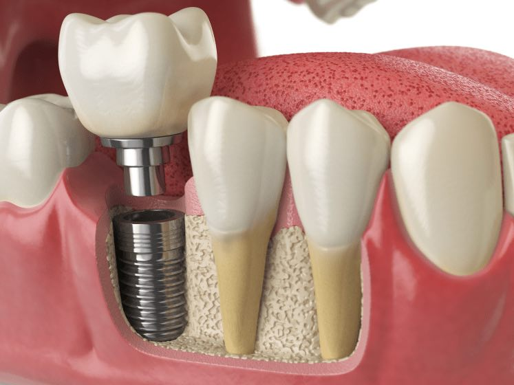
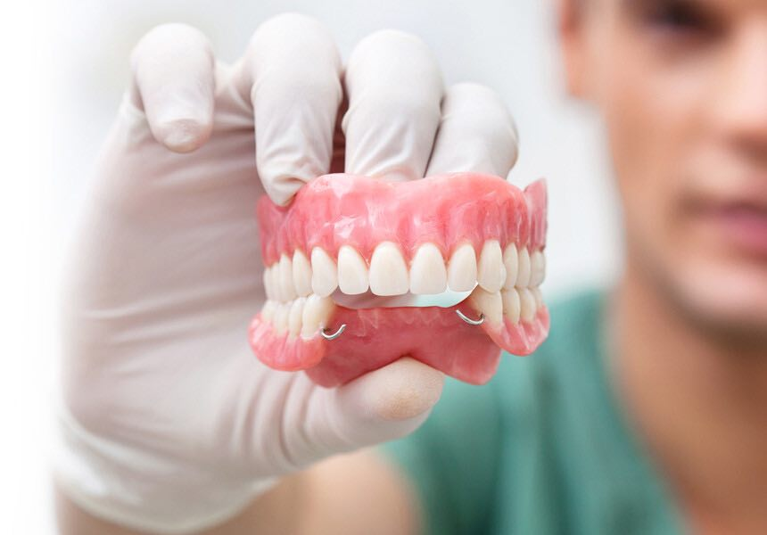

Компьютерное моделирование в протезировании зубов – что это такое Компьютерное моделирование, как уже становится ясно из самого названия этой технологии, позволяет использовать при протезировании зубов обычный компьютер/планшет, но, естественно, со специальным «софтом» (то есть программным обеспечением). При помощи него создается трехмерная цифровая модель будущей улыбки пациента, с учетом всех анатомических особенностей – формы и цвета зубов, их размеров и сочетания с контурами лица, с цветом кожи, уровнем десны, величины губ и носа, ширины улыбки.
Применение компьютера для моделирования улыбки не только ускоряет сам процесс протезирования, но и оптимизирует взаимоотношения между стоматологом и пациентом, а также стоматологом и зубным техником. Особенно пациентам нравится, что они активно участвуют в процессе моделирования – вместе с врачом выбирают цвет и форму будущих зубов.
Современные технологии компьютерного моделирования позволили стоматологии сделать шаг вперед в качестве предоставляемых услуг и удобстве для пациентов. Устаревшие методики снятия слепков показали свои недостатки и со временем стали больше заменяться трехмерными моделями. Где же применяется эти технологии и какие преимущества они имеют?
При установке протеза приходится несколько раз снимать слепки, подгонять и корректировать протез. При обычных методах это может занимать от нескольких дней до нескольких недель. Компьютерная модель позволяет за один день изготовить коронку или зубной мост. Пациент, находясь в кресле стоматолога, может наблюдать за процессом. Сначала сканируется полость рта, далее моделируется будущий зуб. Из цельной керамики фрезеровальный аппарат с высокой точностью вырезает коронку. При необходимости препарирования зубов этот метод остается самым быстрым, точным. Именно благодаря этой технологии зубы остаются максимально подготовленными для установки коронок.
При реставрации улыбки технология трехмерного моделирования позволяет виртуально провести лечение. Пациент, увидев результат, может принять решение и составить представление о дальнейшем вмешательстве. Эстетическая составляющая в этом виде стоматологических процедур имеет очень большое значение. Материалы, применяемые для создания реставраций, по текстуре схожи с натуральными зубами. Они более долговечные, не накапливают налет, не меняют цвет со временем. Фиксация к культи с максимальным прилеганием не только эстетичнее выглядит, но и не оставляет места для скопления бактерий, приводящих к заболеванию полости рта.
Для установки зубных имплантов компьютерное моделирование стало наиболее актуально. Кроме внешней, видимой части коронки врач определяет размер, диаметр, угол наклона по трем осям, выбирает инструменты и создает хирургический шаблон. Такой подход снижает риски появления дискомфорта, поломки коронки, неравномерной нагрузки при жевании. Изготовление в процессе имплантации зубов индивидуальных компонентов значительно повышает качество жизни пациента после операции.
К плюсам данной методики безусловно относят высокую точность диагностики, моделирования и изготовления. Программное обеспечение способно придать новым зубам неотразимый внешний вид. Копировать бороздки и изгибы, переносить их на модель может практически любой аппарат возвращая лицу молодость. Материалы гипоаллергенные, устойчивы к сколам, не меняют цвет, плотность единая, что не создает внутреннего давления. По сравнению с пломбировочными и реставрационными материалами цельнокерамические блоки служат дольше. Из минусов можно выделить значительно большую стоимость конечного лечения. Стоит отметить, что не каждая клиника имеет возможность пользоваться таким оборудованием. Чтобы врач мог проводить высокоточное лечение необходимо пройти обучение на знание определенной программы, иметь навыки работы с конкретным видом оборудования. Желание обучаться и совершенствоваться должно быть у выбранного Вами стоматолога, так же как и осознание ответственности за здоровье и конечный результат.
• подобрать форму и цвет коронок/виниров в соответствии с запросами пациента, • заранее увидеть будущую улыбку с новыми зубами и «примерить» ее: это происходит на экране компьютера или на планшете, • заранее оценить работоспособность протеза: как будут смыкаться челюсти, не нарушатся ли прикусные взаимоотношения, • омолодить лицо за счет Dental face lifting и применения принципов «золотого» сечения, и «маски красоты»: эти параметры учитываются при цифровом моделировании (цвета и формы коронок) – в итоге лицо выглядит привлекательнее и моложе, • сформировать и изучить модель челюсти пациента перед имплантацией